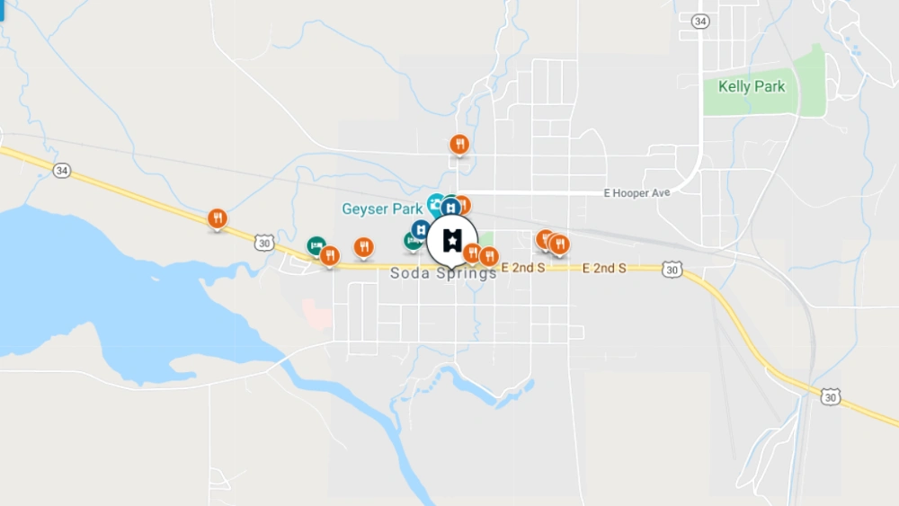

Soda Springs, Idaho
Weather Summary
Current Temperature:
High:
Wind Chill:
Wind Speed: mph
Humidity:
5 Day Forecast
°F
°F
°F
°F
°F
Geysers?

Soda Springs is well known for the Soda Springs Geyser and the hotpools! Stopping by to see it will surely get you ready for a trip to Yellowstone National Park! It is an excellent place to learn about the area and supply you with traveler's info. Apart from geysers there is aHoopers park, a great place families to go, and may local scenic places to go for a hike. You won't be dissapointed with the beauty Soda Springs Idaho!
Contact Us
123 w 456 n Soda Springs, ID
208-521-5554
active208@gmail.com